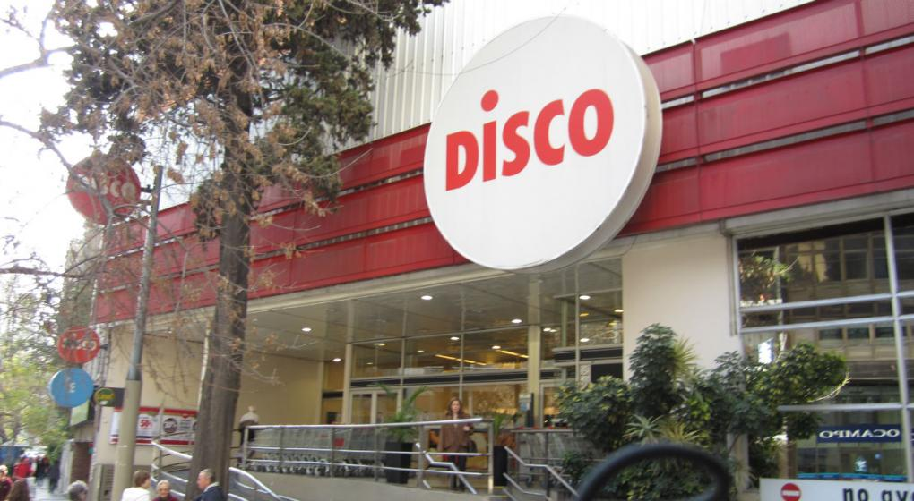

Disco is an Argentine supermarket chain, belonging to the group Chilean Cencosud since 2004, when it was bought from the Dutch company Ahold for 315 million dollars They also belong to Cencosud Hipermercados Jumbo and Vea Supermarkets, which together with Disco own around 21% of the national supermarket market. By early 2007, Disco owned 120 stores, most of them in the City of Buenos Aires and in the provinces of Córdoba and Buenos Aires. Since then, Cencosud began a process in which it transformed several from branches to Vea, the company's low-cost store brand, and some others to Jumbo. As of March 2018, it has 87 stores.